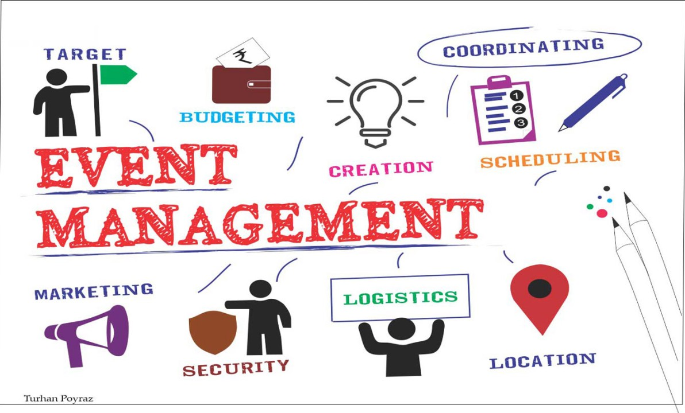

My Projects
Sign Language Translator
A smart translator built using design thinking methodology. Converts words to Indian Sign Language using avatars with voice support.
View SourcePrint Queue Simulator
Simulates a priority queue in a print job environment. Built using HTML/CSS/JS with concepts from Data Structures.
View Source
Brick Breaker Game
A fun and interactive C++ game using Turbo C++. Features ball movement, scoring, and collision detection.
View Source
Event Management Website
A modern website developed using HTML, CSS, JavaScript for managing and displaying college events. Built under Web Programming.
View Source

Event DBMS Operations
Performs CRUD operations (Insert, Update, Delete) on event records using a database management system (SQLite).
View Source